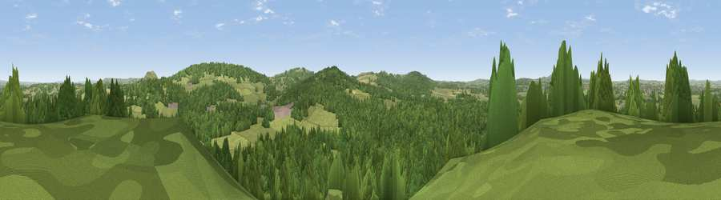

Viewpoint near East Woodlands
#38462 in England · top 82% of its area beats it · near East WoodlandsWhere it is
The exact computed spot (ST 79925 43875). Click the marker for map links.
The view, rendered

A 360° render of this exact spot computed from the terrain model, tree cover and land cover — summer colours, afternoon light, calibrated against photographs of famous viewpoints. Real trees, hedges and buildings will differ in detail.
The panorama
Grey silhouette: terrain skyline in each direction (720 bearings, Earth curvature and refraction included). Dashed green: skyline with trees (+15 m) and buildings (+8 m) as obstacles. Blue strip: how far the ground is visible on each bearing.
Where the view opens
Wedge length = distance to the farthest visible ground on that bearing (vegetation-aware). Rings at 10, 25 and 50 km.
What fills the view
57% woodland · 36% grassland · 5% cropland · 2% built-up
Angular shares of the visible panorama (visual magnitude), not map area. Landscape diversity 0.40 (0–1 Shannon).
Key numbers
More beautiful places nearby
The staircase of upgrades: each row has a higher view potential than everything closer. Driving times are estimates from straight-line distance, calibrated against real road routing — check an actual route before setting out.
| Place | Direction | Drive | Score |
|---|---|---|---|
| Wraxall Hill | WNW · 1 km | ~4 min | 34.4 |
| Viewpoint near Horningsham | SE · 3 km | ~7 min | 53.6 |
| Cley Hill | ENE · 4 km | ~9 min | 76.8 |
| Viewpoint near Lamyatt | WSW · 15 km | ~27 min | 77.8 |
| Viewpoint near Berwick St John | SSE · 26 km | ~42 min | 78.2 |
| Beacon Batch | WNW · 34 km | ~52 min | 79.4 |
| Bleadon Hill [Loxton Hill] | WNW · 45 km | ~66 min | 79.6 |
| Viewpoint near Stinchcombe | N · 55 km | ~76 min | 80.5 |
51.19374, -2.28866 · source: screening · position refined by local search. Computed location — check access rights before visiting.